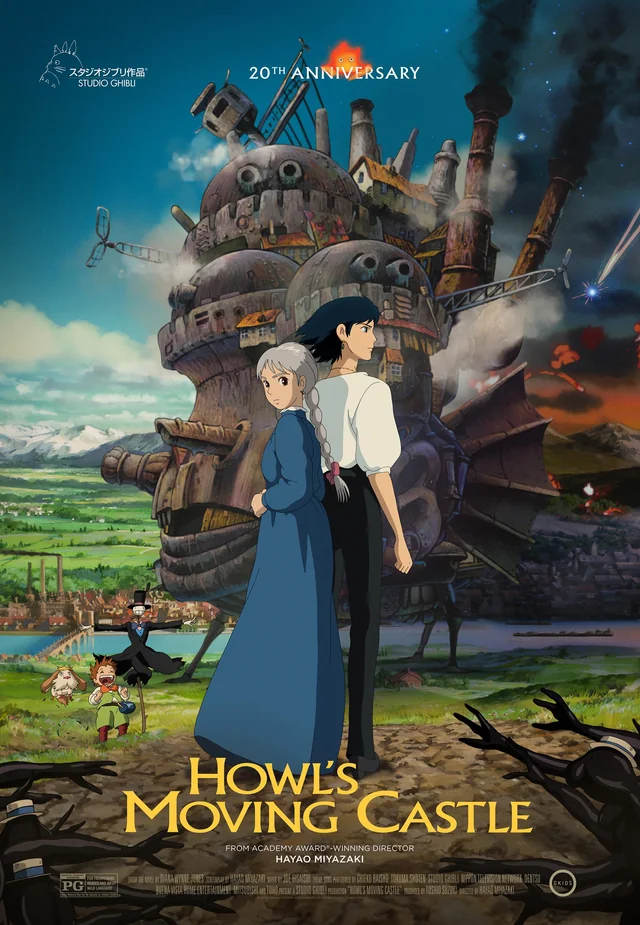
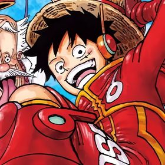
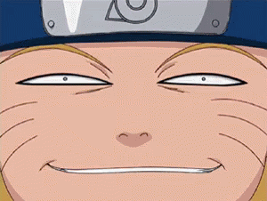
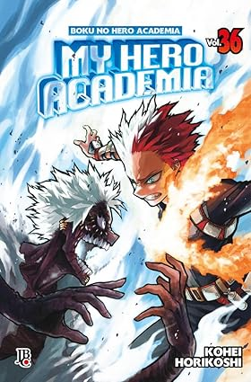
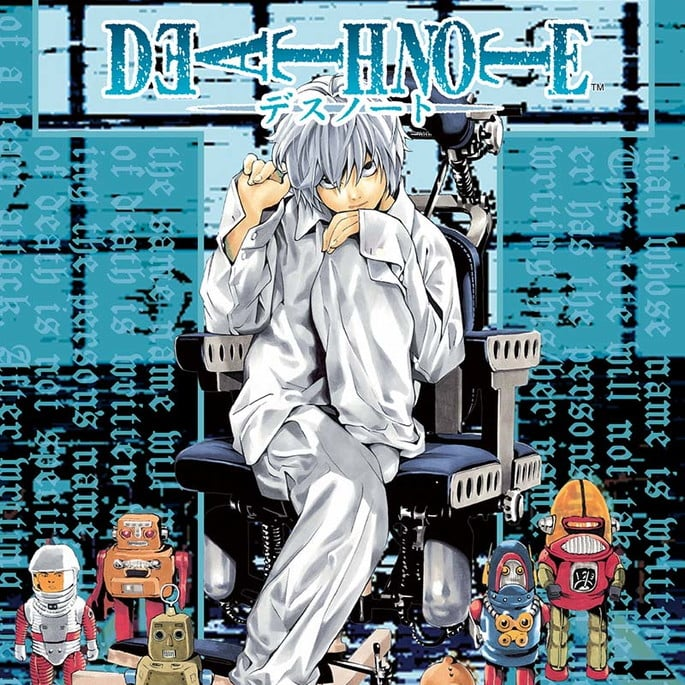
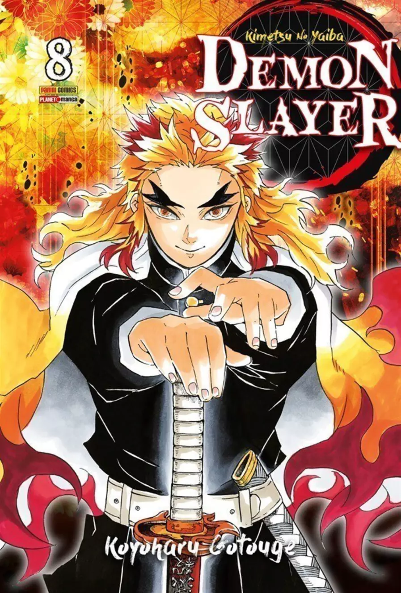

Algumas obras de mangá/anime que particulamente eu gosto bastantes e quero falar um pouco são: Hunter x Hunter, O castelo animado, e One piece.
Hunter vs Hunter
![grupo de quatro amigos, o primeiro do lado direito é um homem,
cabelo preto, e estilo espetado, no rosto um oculos pequeno preto e olhos castanhos,
esse personagem se chama Leorio.
Ao lado esquerdo dele tem outro personagem, cabelos lisos, escovados para baixo de cor loiro,
olhos azuis, usa uma roupa com uma manta azul mas não dá pra notar, esse se chama Kurapika.
Embaixo há mais dois personagens, dois garotos.
O primeiro está do lado esquerdo, cabelos da cor preta, estilo espetado pra cima, olhos
castanhos, e usa tipo um uniforme verde, expresão sorridente.
O segundo possuí cabelos brancos, cabelos escovados para baixo, olhos azuis. Usa uma camiseta
de manga curta, da cor roxa com um desenho de uma estrela branca no centro.
por dentro da camiseta há outra camisa de cor preta de mangas da cor preta.
Eles se chama Gon e Killua.
Personagens do mangá Hunter vs Hunter.](Gon.png)
Esse anime eu conheci ele no clássico, foi um dos animes longos que maratonei até ao fim.
Quando assisti o remake, não gostei o fato de terem retirado várias cenas do antigo nesse novo remake.
A sensação de assistir é igual quando vamos ver um filme baseado em um livro e a grande parte muda.
Não estou dizendo que essa nova versão seja ruim, pelo contrário é muito boa.
Apenas fiquei desapontada, porque tinhas algumas cenas do clássico que eram as minhas partes favoritas e não apareceu. (T-T)
Você já teve essa mesma sensação ?
O castelo animado (Studio Ghibli)

Esse filme é um dos meus favoritos, acho a animação dele muito fluída e colorida.
Ele foi lançado em 2005, (nem tinha nascido ainda kkk). Pra um filme antigo, eu achei uma das melhores animações que já assisti, uma historia bonita e confortante.
Há outras obras do Studio Ghibli como: Ponyo, Meu amigo Totoro, A viagem de Chihiro, entre outros.
Tem uma música do castelo animado que achei muito linda, se tiver curioso pra ver, deixei o video aqui em baixo.
Inclusive esse filme foi baseado na trilogia do livro chamado Howl's Moving Castle, da autora Diana Wynne Jones, publicado em 1986. Não cheguei a ler o livro mas a minha irmã sim, ela comentou que no livro é muito diferente do filme. Comentou que o livro é bom, mas prefere a versão do filme, deve ser poque eu e ela, conhecemos primeiro o filme, e depois descobrimos que tinha o livro.
Igual o meu caso sobre Hunter vs Hunter, eu prefiro a versão antiga, por ter sido o primeiro que assisti.
One Piece

Atualmente estou acompanhando esse anime, e eu simplismente amei ele, tem tudo que eu gosto que é ação, aventura e comédia.
Amei a dublagem, deixou a série mais divertida e engraçada de assistir.
Dandadan

Esse também estou acompanhando a nova temporada, estou assistindo com a minha irmã desde a primeira temporada. A gente riu muito, e ficou chocada com o primeiro episódio. (quem assistiu entendeu) porque tinha visita na cozinha e foi um choque kkk. Sem contar que a música de abertura é muito boa, e olha que raramente eu vejo abertura.

Recomendo assistir com a família.

Eu amo a arte desse mangá, acompanhei desde a primeira temporada e notei a evolução dos traços.

Eu assistir esse anime três vezes, uma vez legendado, depois dublado, ai assistir de novo por saudade rsrs.
Gostei bastante que ele é voltado para o suspense e mistério.

Esse eu acompanhei tanto o anime como o mangá. Inclusive pretendo assistir o filme que vai sair nos cinemas.
Pretendo também compras os 23 volumes do mangá, e os bonequinhos pra enfeitar rsrs.
Na próxima pagina vou falar sobre um dos meus gostos musicais.
Continuar Lendo